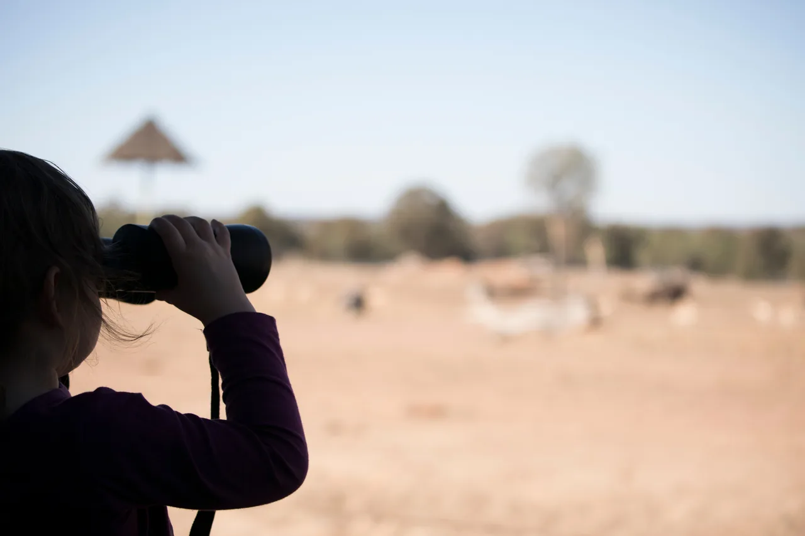
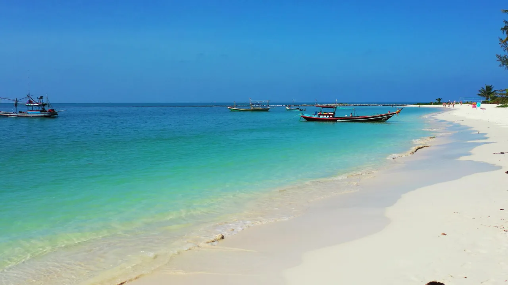
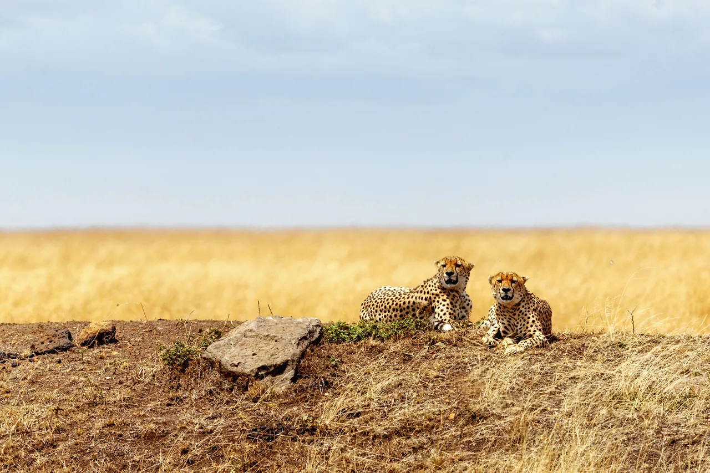

Moments that stay with you.
A safari is more than a game drive. Float above the plains at dawn, walk with a Hadzabe hunter, dine beneath the stars. Choose the experiences that will shape your journey.
Find your kind of wild.
Every experience can be added to a private itinerary, and our guides will time it to the season, the parks and your pace.
 Wildlife
WildlifeThe Great Migration
Trace the year-round journey of wildebeest and zebra across the Serengeti, from the calving grounds of Ndutu to the dramatic Mara River crossings of the far north.
Discover Wildlife
WildlifeBig Five and Big Cats
Private game drives through the Serengeti, Tarangire and Ngorongoro Crater in search of Africa's most celebrated animals, with time to linger over the cats that make the plains so compelling.
Discover Adventure
AdventureHot-Air Balloon Safari
An optional dawn flight over the Serengeti, gliding above herds and acacia woodland in near silence, followed by a celebratory breakfast in the bush. A perspective few travellers ever forget.
Discover Adventure
AdventureWalking Safaris
Guided walks with an armed ranger where permitted, revealing the smaller wonders of the bush: tracks in the sand, medicinal plants, birdsong and the thrill of moving through wild country on foot.
Discover Culture
CultureCultural Encounters
Spend time with the Hadzabe and Datoga around Lake Eyasi, visit a Maasai community and stroll through the lively village of Mto wa Mbu, adding human depth to your safari.
Discover Celebration
CelebrationBush Dining and Sundowners
From picnic lunches under acacia trees to a sundowner as the plains turn gold and private bush dinners by lantern light, meals become some of the most memorable moments of your safari.
Discover
JourneysFamily Safaris
Private safaris shaped around your family's pace, with flexible game drives, engaging guides and destinations chosen for variety, so every generation finds something to love.
Discover
CelebrationHoneymoons and Romance
Begin with private game drives and sundowners in the Serengeti, then unwind on Zanzibar's white beaches. A honeymoon that balances adventure, intimacy and pure, unhurried relaxation.
Discover
WildlifePhotographic Safaris
Private game drives built around light, angles and patience, with a guide who understands that the perfect frame may take an hour of stillness. Ideal for keen photographers of every level.
DiscoverShape it around what moves you.
Tell us which moments matter most and we will design a private safari around them.